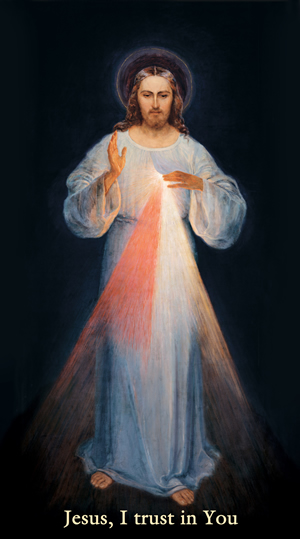

CENTRE FOR MERCY
Latest Message Jul 25
Daily Homilies*
About Us~Contact Us
Jesus is Real
Prayer and Gatherings
Young Saints
Apparitions
Eucharistic Adoration
Stations of the Cross
Medjugorje
Shrines & Petitions
Daily Homilies ~ St. James*
The Rosary
Our Lady of Knock
Akita
The Level
Remembering Father Ed
Eucharistic Miracles
Divine Mercy
Daily Seven
GOD's Precise Moment
A Pilgrim's Sharing
66 Franciscan Martyrs
Heart Bible Verses
website templates

Divine Mercy
Click the image to learn more about God's great Mercy.
Lent St. Faustina Quotes
(PDF)